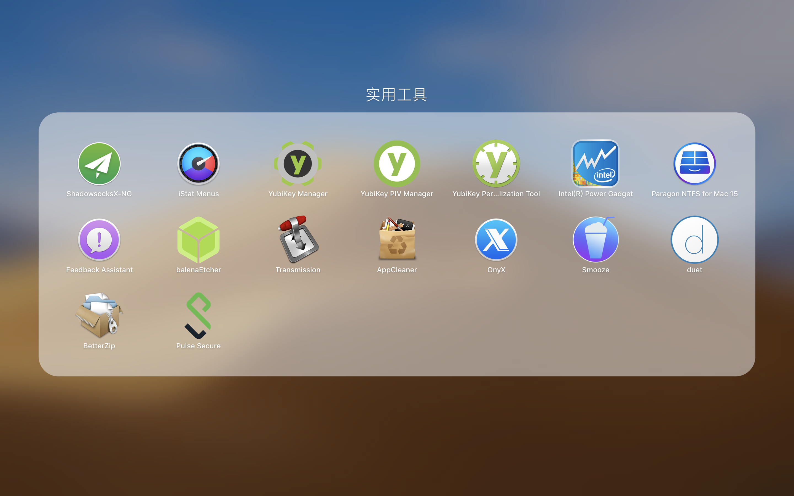

前言
本人也装过好多次电脑了，然而每次重装都要重新装软件，所以记录一下我都装了些啥软件，以免以后忘了。
列表
adobe
- Ps
- Id
- LR
- Acrobat DC
理工科软件
- Clion（有可能 Xcode 的 bug 比较多，配置比较烦，用 Clion 好很多）
- Xcode（有很多软件会基于 Xcode 才能安装）
- Anaconda（python 的环境管理器，有了这个就不用 python 不同环境繁琐的依赖管理了）
- iTerm（命令行）
- VSCode（万能文本编辑器）
- LaTeX（论文排版）
- Git（代码管理）
- Pandoc（日常格式转换）
- GeoGebra（几何画板）
- Matlab（科学计算）
音视频软件
- apple FCPX+LPX（音视频制作）
- Kontakt（软音源）
多媒体
- audirvana plus（音乐播放）
- IINA（视频播放）
- Bluray player（蓝光播放）
- Foobar2000（Win/音乐播放）
- Potpalyer（Win/视频播放）
- Cyberlink（Win/蓝光播放）
工具
-
brew（macos 的包管理器）
-
VMware (Mac&Win/虚拟机)
-
其他小工具

日常
- 微信
- 百度云
- steam
- chrome
- Office
- PPSSPP